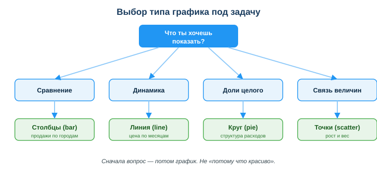
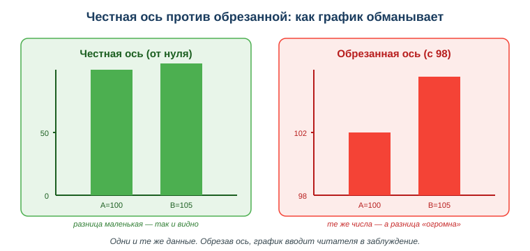

Тебе прислали таблицу из тысячи строк: продажи по городам и месяцам. Заказчик спрашивает: «В каком городе дела идут лучше?». Ты вглядываешься в столбцы цифр — и не видишь ответа сразу. Глаз тонет в числах.
Ты строишь один график — и ответ виден за секунду: вот город-лидер, вот провал, вот странный выброс. Визуализация превращает числа в картинку, понятную и заказчику, и преподавателю, и тебе самому. А ещё это быстрый способ проверить данные: на графике сразу заметно, если что-то не так.

Глаз человека замечает на картинке то, что в таблице не видно: тренд, аномалию, соотношение. Поэтому визуализация нужна, чтобы понять данные самому (быстрая проверка), показать результат другим (отчёт, защита проекта) и найти ошибку — резкий выброс на графике часто оказывается опечаткой в данных.
Связь с профессией: разработчик постоянно работает с данными — из базы, из лога, из выгрузки. Прежде чем строить отчёт или принимать решение, эти данные надо увидеть. Умение быстро построить честный график — рабочий инструмент, а не украшение.
Посмотри на схему выбора графика выше. Ответь на вопросы:
Проще: таблица отвечает на вопрос «какое точное число?», а график — на вопрос «что здесь происходит в целом?». Для быстрого понимания и для отчёта почти всегда нужен график.
Тип графика зависит от того, что ты хочешь показать:
| График | Когда применять |
|---|---|
| столбчатый (bar) | сравнить категории (продажи по городам) |
| линейный (line) | изменение во времени (цена по месяцам) |
| круговой (pie) | доли целого (структура расходов) |
| точечный (scatter) | связь двух величин (рост и вес) |
Главное правило: выбирай график под вопрос, а не «потому что красиво».
В Python чаще всего берут Matplotlib — простую библиотеку для графиков. Она хорошо работает в паре с Pandas:
import matplotlib.pyplot as plt
goroda = ["Алматы", "Астана", "Шымкент"]
prodazhi = [120, 90, 60]
plt.bar(goroda, prodazhi)
plt.title("Продажи по городам")
plt.show()Несколько строк — и данные стали понятной картинкой. ИИ-ассистент тоже помогает: опиши словами нужный график и попроси код — но результат всё равно проверяй сам.
Один и тот же набор чисел можно показать честно — и можно подтасовать. Самый частый трюк: обрезать ось значений, чтобы начать её не с нуля. Тогда крошечная разница выглядит огромной.

Города A=100 и B=105 различаются всего на 5 %. На честной оси (от нуля) столбцы почти равны. А если начать ось с 98 — B становится «в два раза выше» A. Числа те же, вывод у читателя — противоположный. Поэтому для столбчатых графиков ось значений начинают с нуля.
Дан рост продаж по месяцам. Столбчатый график показывает значения, но линейный лучше — он подчёркивает рост во времени и непрерывность. Вывод: один и тот же набор данных читается по-разному в зависимости от типа графика, поэтому выбор графика — это уже половина ответа.
Ответь письменно:
Источник: официальная документация Matplotlib и Pandas; рамка цифровых компетенций DigComp 2.2 (работа с данными).
Материал разработан рабочей группой ТОО «Колледж Хекслет Казахстан» и одобрен к использованию в обучении решением Педагогического совета.